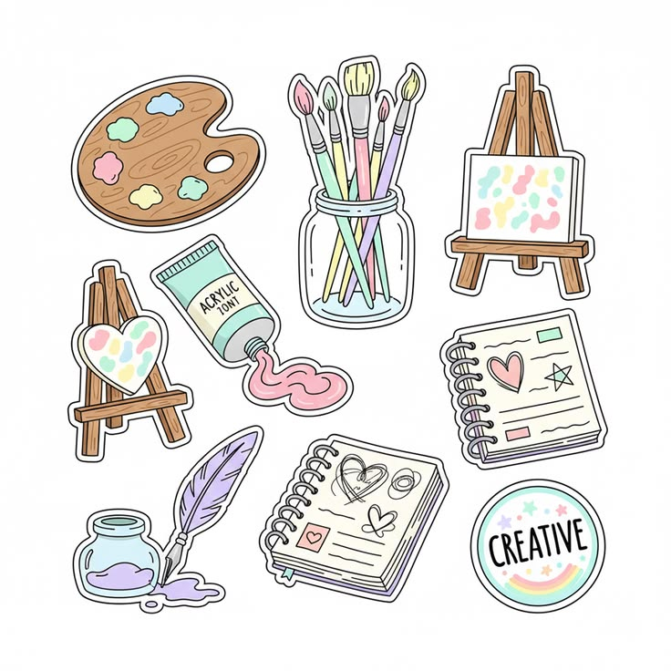

Govt Graduate College Hub
Things they don't tell you
Notes
Past Papers
Semester Timeline
GGC Survival Guide
Beyond College
Tea Room

Legal Activities
Want to rant?
Notes
Past Papers
Semester Timeline
GGC Survival Guide
Beyond College
Tea Room

Legal Activities
Want to rant?
If you're a student at a Government Graduate College, Mandi Bahauddin, affiliated with the University of the Punjab, College Hub is especially for you.
It brings together the things you actually need during college — from notes and past papers to useful resources, timelines, survival guides, and a few things you probably won't find in your official course outline.
If you're from another college affiliated with Punjab University, you're welcome here too. Our notes, past papers, and many of the resources can still be useful to you. Just keep in mind that some college-specific information, guides, and resources may not apply to your college.
So, explore around, take what helps, and make college a little easier.